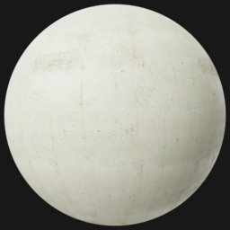
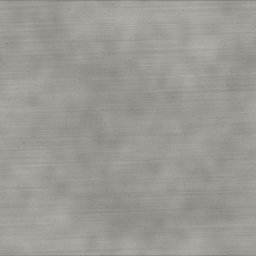
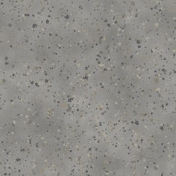
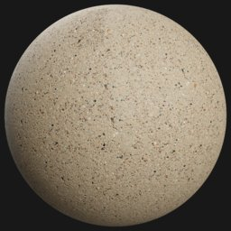
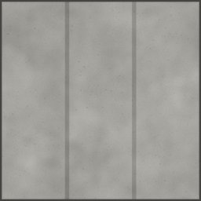
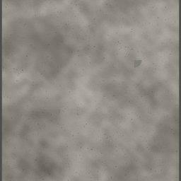
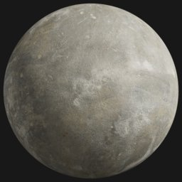
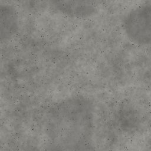
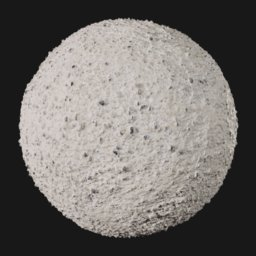
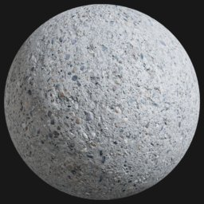

← All scout pages · Public copy, pages as of 2026-10-16 11:18. Poly Haven’s previews are not copied (their site pictures are not CC0); the offline 3D viewer stays on the owner’s machine.
Concrete scout — CC0 prospects
Every row of Concrete that the 16 Oct material grid uses (HIT) or proposes (GAP), from docs/plans/SURFACE_LIST-proposed-2026-10-16.md (commit d770ab5c), with up to three CC0 prospects from Poly Haven and ambientCG. Real photos are preferred; a generated (computer-made) set is listed only when neither library has a photo of that look, and it is marked. Built 2026-10-16 the way scout concrete builds a page, plus each prospect's real size and 2K download size. Read-only: nothing in the game was changed, nothing was downloaded at full size, and nothing entered the records.
3D: an ambientCG prospect's picture opens ambientCG's own 3D preview; a Poly Haven prospect's page has its 3D preview. Our offline viewer of the game's own maps is not on this public copy.
8 rows scouted (7 HIT, 1 GAP) of 13 on the list
8 with a real-photo prospect
0 computer-made only
0 nothing found
5 left out as [UNUSED?]
Left out, marked [UNUSED?] on the list (no grid cell uses them): Stamped, Exposed aggregate, Cracked and spalled, Rebar-exposed, Graffitied concrete. Already approved or under review in docs/materials/concrete.json: none.
Poured smooth photo Board-formed photo Broom / brushed finish photo Polished photo Precast panel photo Tilt-up panel photo Shotcrete / gunite photo Painted concrete photo
01 Poured smooth concrete_poured_smooth HIT — the grid uses it Now in the game code-drawn · status originalThumbnail: the game's drawn picture Real photo prospect found.
Plain smooth poured concrete photos; climbing_wall_base has the round form-tie holes of a real poured wall.
Not copied here: Poly Haven’s previews are not CC0. Its Poly Haven page shows it ↗ REAL PHOTO BEST FIT
Library ID Poly Haven · concrete_wall_009Technique Real photo (Poly Haven scan)
Licence CC0 License — CC0 1.0 Universal - public domain dedication, no attribution required
Real size 1.8 × 1.8 m (page: “1.8m wide”)
2K size 71.1 MB — 2K PNG maps a pull fetches (Diffuse, nor_gl, Rough, AO, arm); as JPG 12.8 MB
Credit Charlotte Baglioni
Source https://polyhaven.com/a/concrete_wall_009 3D The picture opens Poly Haven's page (its 3D preview)

REAL PHOTO
Library ID ambientCG · Concrete046Technique Real photo — approximated from one photo (page says “Approximation”)
Licence All assets are released under the Creative Commons CC0 license, making them free to use without attribution - even in commercial circumstances.
Real size 2.4 × 2.4 m
2K size 59.7 MB — the 2K-PNG zip a pull fetches; 2K-JPG zip 23.2 MB
Credit ambientCG
Source https://ambientcg.com/a/Concrete046 3D The picture opens ambientCG's 3D preview (pbr.one)
Not copied here: Poly Haven’s previews are not CC0. Its Poly Haven page shows it ↗ REAL PHOTO
Library ID Poly Haven · climbing_wall_baseTechnique Real photo (Poly Haven scan)
Licence CC0 License — CC0 1.0 Universal - public domain dedication, no attribution required
Real size 2 × 2 m (page: “2m wide”)
2K size 71.6 MB — 2K PNG maps a pull fetches (Diffuse, nor_gl, Rough, AO, arm); as JPG 10.4 MB
Credit Dimitrios Savva
Source https://polyhaven.com/a/climbing_wall_base 3D The picture opens Poly Haven's page (its 3D preview)
03 Broom / brushed finish concrete_broom_brushed_finish HIT — the grid uses it 
Now in the game code-drawn · status originalThumbnail: the game's drawn picture Real photo prospect found.
Three real photos of brushed concrete; _04 has the straightest broom lines.
Not copied here: Poly Haven’s previews are not CC0. Its Poly Haven page shows it ↗ REAL PHOTO
Library ID Poly Haven · brushed_concreteTechnique Real photo (Poly Haven scan) — credits list photography
Licence CC0 License — CC0 1.0 Universal - public domain dedication, no attribution required
Real size 2.5 × 2.5 m (page: “2.5m wide”)
2K size 80.2 MB — 2K PNG maps a pull fetches (Diffuse, nor_gl, Rough, AO, arm); as JPG 16.8 MB
Credit Dario Barresi Processing; Dimitrios Savva Photography
Source https://polyhaven.com/a/brushed_concrete 3D The picture opens Poly Haven's page (its 3D preview)
Not copied here: Poly Haven’s previews are not CC0. Its Poly Haven page shows it ↗ REAL PHOTO BEST FIT
Library ID Poly Haven · brushed_concrete_04Technique Real photo (Poly Haven scan)
Licence CC0 License — CC0 1.0 Universal - public domain dedication, no attribution required
Real size 2 × 2 m
2K size 75.9 MB — 2K PNG maps a pull fetches (Diffuse, nor_gl, Rough, AO, arm); as JPG 16.6 MB
Credit Amal Kumar
Source https://polyhaven.com/a/brushed_concrete_04 3D The picture opens Poly Haven's page (its 3D preview)
Not copied here: Poly Haven’s previews are not CC0. Its Poly Haven page shows it ↗ REAL PHOTO
Library ID Poly Haven · brushed_concrete_03Technique Real photo (Poly Haven scan)
Licence CC0 License — CC0 1.0 Universal - public domain dedication, no attribution required
Real size 2 × 2 m (page: “2m wide”)
2K size 72.7 MB — 2K PNG maps a pull fetches (Diffuse, nor_gl, Rough, AO, arm); as JPG 16.2 MB
Credit Amal Kumar
Source https://polyhaven.com/a/brushed_concrete_03 3D The picture opens Poly Haven's page (its 3D preview)
04 Polished concrete_polished HIT — the grid uses it 
Now in the game code-drawn · status originalThumbnail: the game's drawn picture Real photo prospect found.
Smooth, slightly shiny floor photos; Concrete040 has the fine dark speckle our drawing shows.
Not copied here: Poly Haven’s previews are not CC0. Its Poly Haven page shows it ↗ REAL PHOTO BEST FIT
Library ID Poly Haven · concrete_floor_worn_001Technique Real photo (Poly Haven scan) — credits list photography
Licence CC0 License — CC0 1.0 Universal - public domain dedication, no attribution required
Real size 3 × 3 m
2K size 78.6 MB — 2K PNG maps a pull fetches (Diffuse, nor_gl, Rough, AO, arm); as JPG 3.4 MB
Credit Dimitrios Savva Photography; Rico Cilliers Processing
Source https://polyhaven.com/a/concrete_floor_worn_001 3D The picture opens Poly Haven's page (its 3D preview)
Not copied here: Poly Haven’s previews are not CC0. Its Poly Haven page shows it ↗ REAL PHOTO
Library ID Poly Haven · smooth_concrete_floorTechnique Real photo (Poly Haven scan)
Licence CC0 License — CC0 1.0 Universal - public domain dedication, no attribution required
Real size 2 × 2 m (page: “2m wide”)
2K size 79.3 MB — 2K PNG maps a pull fetches (Diffuse, nor_gl, Rough, AO, arm); as JPG 14.5 MB
Credit Dimitrios Savva
Source https://polyhaven.com/a/smooth_concrete_floor 3D The picture opens Poly Haven's page (its 3D preview)

REAL PHOTO
Library ID ambientCG · Concrete040Technique Real photo — photogrammetry (page says “Surface Photogrammetry”)
Licence All assets are released under the Creative Commons CC0 license, making them free to use without attribution - even in commercial circumstances.
Real size 1.4 × 1.4 m
2K size 70.0 MB — the 2K-PNG zip a pull fetches; 2K-JPG zip 33.9 MB
Credit ambientCG
Source https://ambientcg.com/a/Concrete040 3D The picture opens ambientCG's 3D preview (pbr.one)
05 Precast panel concrete_precast_panel HIT — the grid uses it 
Now in the game code-drawn · status originalThumbnail: the game's drawn picture Real photo prospect found.
Photos of walls made of separate concrete slabs with visible joints; ours runs the joints up and down, these run across (a turn fixes it).
Not copied here: Poly Haven’s previews are not CC0. Its Poly Haven page shows it ↗ REAL PHOTO BEST FIT
Library ID Poly Haven · concrete_slab_wallTechnique Real photo (Poly Haven scan)
Licence CC0 License — CC0 1.0 Universal - public domain dedication, no attribution required
Real size 2.3 × 2.3 m (page: “2.3m wide”)
2K size 73.8 MB — 2K PNG maps a pull fetches (Diffuse, nor_gl, Rough, AO, arm); as JPG 12.1 MB
Credit Dimitrios Savva
Source https://polyhaven.com/a/concrete_slab_wall 3D The picture opens Poly Haven's page (its 3D preview)
Not copied here: Poly Haven’s previews are not CC0. Its Poly Haven page shows it ↗ REAL PHOTO
Library ID Poly Haven · concrete_slab_wall_02Technique Real photo (Poly Haven scan)
Licence CC0 License — CC0 1.0 Universal - public domain dedication, no attribution required
Real size 2.1 × 2.1 m (page: “2.1m wide”)
2K size 65.6 MB — 2K PNG maps a pull fetches (Diffuse, nor_gl, Rough, AO, arm); as JPG 10.7 MB
Credit Amal Kumar
Source https://polyhaven.com/a/concrete_slab_wall_02 3D The picture opens Poly Haven's page (its 3D preview)
Not copied here: Poly Haven’s previews are not CC0. Its Poly Haven page shows it ↗ REAL PHOTO
Library ID Poly Haven · concrete_panelsTechnique Real photo (Poly Haven scan)
Licence CC0 License — CC0 1.0 Universal - public domain dedication, no attribution required
Real size 8 × 8 m (page: “8m wide”)
2K size 67.8 MB — 2K PNG maps a pull fetches (Diffuse, nor_gl, Rough, AO, arm); as JPG 10.5 MB
Credit Amal Kumar
Source https://polyhaven.com/a/concrete_panels 3D The picture opens Poly Haven's page (its 3D preview)
06 Tilt-up panel concrete_tilt_up_panel HIT — the grid uses it 
Now in the game code-drawn · status originalThumbnail: the game's drawn picture Real photo prospect found.
Big flat cast panels with faint seams; Concrete036 has no seams but the mottled grey of a site-cast slab.
Not copied here: Poly Haven’s previews are not CC0. Its Poly Haven page shows it ↗ REAL PHOTO BEST FIT
Library ID Poly Haven · concrete_wall_004Technique Real photo (Poly Haven scan) — credits list photography
Licence CC0 License — CC0 1.0 Universal - public domain dedication, no attribution required
Real size 2 × 2 m (page: “2m wide”)
2K size 75.9 MB — 2K PNG maps a pull fetches (Diffuse, nor_gl, Rough, AO, arm); as JPG 14.7 MB
Credit Charlotte Baglioni Photography; Dario Barresi Processing
Source https://polyhaven.com/a/concrete_wall_004 3D The picture opens Poly Haven's page (its 3D preview)
Not copied here: Poly Haven’s previews are not CC0. Its Poly Haven page shows it ↗ REAL PHOTO
Library ID Poly Haven · concrete_wall_007Technique Real photo (Poly Haven scan) — credits list photography
Licence CC0 License — CC0 1.0 Universal - public domain dedication, no attribution required
Real size 2.16 × 2.16 m (page: “2.2m wide”)
2K size 79.3 MB — 2K PNG maps a pull fetches (Diffuse, nor_gl, Rough, AO, arm); as JPG 13.1 MB
Credit Charlotte Baglioni Photography; Dario Barresi Processing; Rico Cilliers Tiling
Source https://polyhaven.com/a/concrete_wall_007 3D The picture opens Poly Haven's page (its 3D preview)

REAL PHOTO
Library ID ambientCG · Concrete036Technique Real photo — approximated from one photo (page says “Approximation”)
Licence All assets are released under the Creative Commons CC0 license, making them free to use without attribution - even in commercial circumstances.
Real size not given (ambientCG lists no size; a pull assumes 1 m)
2K size 62.5 MB — the 2K-PNG zip a pull fetches; 2K-JPG zip 24.7 MB
Credit ambientCG
Source https://ambientcg.com/a/Concrete036 3D The picture opens ambientCG's 3D preview (pbr.one)
07 Shotcrete / gunite concrete_shotcrete_gunite HIT — the grid uses it 
Now in the game code-drawn · status originalThumbnail: the game's drawn picture Real photo prospect found.
Photos of rough, sprayed-looking lumpy concrete; rough_concrete is the closest to sprayed tunnel lining.
Not copied here: Poly Haven’s previews are not CC0. Its Poly Haven page shows it ↗ REAL PHOTO BEST FIT
Library ID Poly Haven · rough_concreteTechnique Real photo (Poly Haven scan)
Licence CC0 License — CC0 1.0 Universal - public domain dedication, no attribution required
Real size 1.23 × 1.23 m (page: “1.2m wide”)
2K size 82.9 MB — 2K PNG maps a pull fetches (Diffuse, nor_gl, Rough, AO, arm); as JPG 18.8 MB
Credit Dimitrios Savva
Source https://polyhaven.com/a/rough_concrete 3D The picture opens Poly Haven's page (its 3D preview)

REAL PHOTO
Library ID ambientCG · Concrete003Technique Real photo — approximated from one photo (page says “Approximation”)
Licence All assets are released under the Creative Commons CC0 license, making them free to use without attribution - even in commercial circumstances.
Real size not given (ambientCG lists no size; a pull assumes 1 m)
2K size 62.2 MB — the 2K-PNG zip a pull fetches; 2K-JPG zip 25.4 MB
Credit ambientCG
Source https://ambientcg.com/a/Concrete003 3D The picture opens ambientCG's 3D preview (pbr.one)

REAL PHOTO
Library ID ambientCG · Concrete025Technique Surface Photogrammetry Child Asset (page says “Surface Photogrammetry Child Asset”)
Licence All assets are released under the Creative Commons CC0 license, making them free to use without attribution - even in commercial circumstances.
Real size not given (ambientCG lists no size; a pull assumes 1 m)
2K size 70.2 MB — the 2K-PNG zip a pull fetches; 2K-JPG zip 33.6 MB
Credit ambientCG
Source https://ambientcg.com/a/Concrete025 3D The picture opens ambientCG's 3D preview (pbr.one)
08 Painted concrete no key yet GAP 16 Oct — proposed Not in the game yet: a new entry the 16 Oct grid proposes
No current look Real photo prospect found.
Three real photos of painted concrete: painted_concrete is a green-painted wall with chips; painted_concrete_02 a smooth dark-painted surface; concrete_floor_painted a worn dark-painted floor. None shows form-tie holes (Poured smooth's prospect concrete_wall_009 has them, unpainted). The list expects a procedural colour modifier; these show a photo route exists too.
Not copied here: Poly Haven’s previews are not CC0. Its Poly Haven page shows it ↗ REAL PHOTO BEST FIT
Library ID Poly Haven · painted_concreteTechnique Real photo (Poly Haven scan) — credits list photography
Licence CC0 License — CC0 1.0 Universal - public domain dedication, no attribution required
Real size 2 × 2 m (page: “2m wide”)
2K size 80.3 MB — 2K PNG maps a pull fetches (Diffuse, nor_gl, Rough, AO, arm); as JPG 16.9 MB
Credit Dario Barresi Processing; Dimitrios Savva Photography
Source https://polyhaven.com/a/painted_concrete 3D The picture opens Poly Haven's page (its 3D preview)
Not copied here: Poly Haven’s previews are not CC0. Its Poly Haven page shows it ↗ REAL PHOTO
Library ID Poly Haven · painted_concrete_02Technique Real photo (Poly Haven scan)
Licence CC0 License — CC0 1.0 Universal - public domain dedication, no attribution required
Real size 4 × 4 m (page: “4m wide”)
2K size 61.8 MB — 2K PNG maps a pull fetches (Diffuse, nor_gl, Rough, AO, arm); as JPG 11.4 MB
Credit Rob Tuytel
Source https://polyhaven.com/a/painted_concrete_02 3D The picture opens Poly Haven's page (its 3D preview)
Not copied here: Poly Haven’s previews are not CC0. Its Poly Haven page shows it ↗ REAL PHOTO
Library ID Poly Haven · concrete_floor_paintedTechnique Real photo (Poly Haven scan)
Licence CC0 License — CC0 1.0 Universal - public domain dedication, no attribution required
Real size 2 × 2 m (page: “2m wide”)
2K size 88.5 MB — 2K PNG maps a pull fetches (Diffuse, nor_gl, Rough, AO, arm); as JPG 11.8 MB
Credit Rob Tuytel
Source https://polyhaven.com/a/concrete_floor_painted 3D The picture opens Poly Haven's page (its 3D preview)
How this was checked. Both catalogues were refreshed on 2026-10-16 (Poly Haven: all textures; ambientCG: every material) and the prospects chosen by eye from their thumbnails; the HIT rows keep the 10 Oct picks, re-checked against the current looks. Each prospect's own page was fetched on 2026-10-16 and its licence line read there: every Poly Haven page shows “CC0 License” beside the author credit and declares “CC0 1.0 Universal – public domain dedication, no attribution required”; every ambientCG page says “All assets are released under the Creative Commons CC0 license…”. A page without that line would have stopped the build. ambientCG's technique is copied from the page's Technique field (the site spells procedural “Prodedural”); Poly Haven's textures are scans of real surfaces, and where the credits name a photographer that is shown.
Real size : Poly Haven's own dimensions (its page's “… wide” shown beside them); ambientCG's dimension fields, which most sets leave empty. 2K size : what tools/surface_photos.py would fetch on a pull, read from each library's file list without downloading: Poly Haven's 2K PNG maps (Diffuse, nor_gl, Rough, AO, arm, where present), ambientCG's 2K-PNG zip; the JPG equivalent is shown for scale.
Thumbnails are the libraries' own small previews (256 px), stored beside this page in concrete_files/. Current-look thumbnails are 256 px copies of the game's colour picture. The 3D viewer lives in viewer/ and reads copies of the game's map files (same bytes, checksums shown).